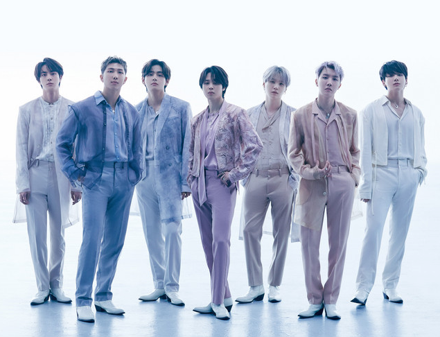

Historia

Por esto se hizo una audición "Hit It" y tras la selección de los chicos se le iba a poner nombre al grupo. Pero desde su selección, el grupo atravesó algunos cambios de chicos durante en entrenamiento y se tuvo que posponer su debut.
DEBUT Y SINGLE ÁLBUM " 2 COOL 4 SKOOL"
Fue el 26 de Mayo cuando lanzaron el primer teaser,y debutaron oficialmente el 12 de Junio del 2013, y lanzaron su primer MV "No More Dream" el 13 de Junio del mismo año en el M!Countdown; después, el 16 de Junio liberaron su segundo vídeo musical " We are Bulletproof Pt. 2".
SU PRIMER MINI-ÁLBUM "O!RUL8,2?"
El 27 de Agosto de 2013, la agencia lanzó un comeback trailer en donde se daba a conocer su primer mini álbum,el nombre de este,la fecha de lanzamiento, y su nuevo MV. El 01 de Septiembre dieron a conocer la lista de canciones,la cual tendría un Intro,un Skit,un Cypher,un Outro y seis canciones. Después de la publicación del teaser, el 11 de Septiembre hacen su primer comeback con su primer mini álbum y liberan su MV "N.O".
SEGUNDO MINI-ÁLBUM "SKOOL LUV AFFAIR"
El 02 de Febrero de 2014,en el canal oficial en YouTube de Big Hit,se subió el comeback trailer, en el vídeo se revelan el nombre del álbum y su fecha de lanzamiento. El 05 de Febrero se dio a conocer la lista con el nombre de las canciones y el 11 de Febrero fue lanzado el MV "Boy in Luv".
REGRESO CON UN ÁLBUM ESPECIAL "SKOOL LUV AFFAIR (SPECIAL ADDITION)"
El 06 de Abril lanzaron el MV "Just One Day", el 14 de Mayo lanzaron un álbum especial que consta de 12 canciones, el remix de la canción "I like it", la canción "Miss rigth" y un Skity.
DEBUT EN JAPÓN CON "NO MORE DREAM" Y SU SEGUNDO SENCILLO JAPONES "BOY IN LUV"
Junto a la agencia Pony Canyon (en Japón) el 04 de Junio debutaron con la liberación de su primer single álbum llamado "No More Dream", "I like It Pt.2", "Rise of Bangtan" todos en japonés. El 16 de Julio lanzaron su segundo single álbum en Japón llamado "Boy in Luv".
En Corea del Sur poco a poco BTS fue ganando popularidad y reconocimiento por lo que fueron nominados a premios como los MAMA y en el 2018 ganaron el Daesang como Mejor grupo, su discurso fue tan emotivo que incluso los idols no contuvieron las lágrimas.
Además, los hemos visto ganar premios como los Billboard Music Awards, American Music Awards, Melon Music Awards, entre otros.
Participación en los Grammy y nominaciones
Sin duda los Grammy son los premios más importantes en la industria musical y BTS se presentó por primera vez en el escenario de la premiación en el 2020 junto a Lil Nas X para cantar Old Town Road, sin embargo, en el 2021 se presentaron ellos solos al interpretar Dynamite y este 2022 interpretaron Butter. La agrupación ha estado nominada en dos ocasiones por Mejor interpretación de pop dúo o grupo.
Campaña con Unicef y discurso en la ONU
En el 2017, BTS participó con UNICEF en la campaña Love Myself, esto con motivo de algunos de sus discos que tenían títulos como Love Yourself: Her o Love Yourself: Tear. Y un año después, la agrupación se presentó en la Asamblea General de las Naciones Unidas en donde RM dio un discurso. Hasta el 2021 la campaña, que tiene como finalidad que los jóvenes vivan sin violencia, ha recaudado 2.98 millones de dólares en todo el mundo.
Aparecen en los Oscar
En la última edición de los premios Oscar, BTS apareció sorpresivamente en la ceremonia, aunque por medio de un video en donde algunos de los integrantes contaron cuáles son sus películas favoritas de Disney. Como era de esperarse, rápidamente el nombre del grupo se volvió tendencia tras estar en esta premiación.
Invitados a la Casa Blanca
El pasado 31 de mayo BTS acudió a la Casa Blanca, esto después de que los invitaran para hablar con el presidente de Estados Unidos, Joe Biden. La visita de los surcoreanos fue con motivo del mes de la herencia de los Asiáticos Americanos y Nativos de la y Nativos de las Islas del Pacífico. Antes de reunirse con el mandatario, cada uno de los integrantes dirigió unas palabras y agradeció a sus fans por el apoyo que le han dado en estos años.
El álbum ‘Índigo’ ya se encuentra al alcance de todo army, en diversas plataformas de música para poder descargar y disfrutar de estas nuevas diez canciones, que vienen llenas de sentimientos y sorpresas.
Como se recuerda, Jimin de BTS debutó oficialmente como solista con su primer disco “FACE”, el cual ha promocionado con dos sencillos titulados Like Crazy y Set me free. Además de romper récords de ventas con su reciente álbum estrenado durante el primer día y semana de lanzamiento, el artista también registró millones de reproducciones con “Like Crazy” en plataformas como Spotify.
Origen
Se dieron a conocer en el 2011, Big Hit estuvo buscando en 2010 a un grupo de hombres basado en el Hip-Hop.Por esto se hizo una audición "Hit It" y tras la selección de los chicos se le iba a poner nombre al grupo. Pero desde su selección, el grupo atravesó algunos cambios de chicos durante en entrenamiento y se tuvo que posponer su debut.
DEBUT Y SINGLE ÁLBUM " 2 COOL 4 SKOOL"
Fue el 26 de Mayo cuando lanzaron el primer teaser,y debutaron oficialmente el 12 de Junio del 2013, y lanzaron su primer MV "No More Dream" el 13 de Junio del mismo año en el M!Countdown; después, el 16 de Junio liberaron su segundo vídeo musical " We are Bulletproof Pt. 2".
SU PRIMER MINI-ÁLBUM "O!RUL8,2?"
El 27 de Agosto de 2013, la agencia lanzó un comeback trailer en donde se daba a conocer su primer mini álbum,el nombre de este,la fecha de lanzamiento, y su nuevo MV. El 01 de Septiembre dieron a conocer la lista de canciones,la cual tendría un Intro,un Skit,un Cypher,un Outro y seis canciones. Después de la publicación del teaser, el 11 de Septiembre hacen su primer comeback con su primer mini álbum y liberan su MV "N.O".
SEGUNDO MINI-ÁLBUM "SKOOL LUV AFFAIR"
El 02 de Febrero de 2014,en el canal oficial en YouTube de Big Hit,se subió el comeback trailer, en el vídeo se revelan el nombre del álbum y su fecha de lanzamiento. El 05 de Febrero se dio a conocer la lista con el nombre de las canciones y el 11 de Febrero fue lanzado el MV "Boy in Luv".
REGRESO CON UN ÁLBUM ESPECIAL "SKOOL LUV AFFAIR (SPECIAL ADDITION)"
El 06 de Abril lanzaron el MV "Just One Day", el 14 de Mayo lanzaron un álbum especial que consta de 12 canciones, el remix de la canción "I like it", la canción "Miss rigth" y un Skity.
DEBUT EN JAPÓN CON "NO MORE DREAM" Y SU SEGUNDO SENCILLO JAPONES "BOY IN LUV"
Junto a la agencia Pony Canyon (en Japón) el 04 de Junio debutaron con la liberación de su primer single álbum llamado "No More Dream", "I like It Pt.2", "Rise of Bangtan" todos en japonés. El 16 de Julio lanzaron su segundo single álbum en Japón llamado "Boy in Luv".
Logros
Ser nominados a importantes premiosEn Corea del Sur poco a poco BTS fue ganando popularidad y reconocimiento por lo que fueron nominados a premios como los MAMA y en el 2018 ganaron el Daesang como Mejor grupo, su discurso fue tan emotivo que incluso los idols no contuvieron las lágrimas.
Además, los hemos visto ganar premios como los Billboard Music Awards, American Music Awards, Melon Music Awards, entre otros.
Participación en los Grammy y nominaciones
Sin duda los Grammy son los premios más importantes en la industria musical y BTS se presentó por primera vez en el escenario de la premiación en el 2020 junto a Lil Nas X para cantar Old Town Road, sin embargo, en el 2021 se presentaron ellos solos al interpretar Dynamite y este 2022 interpretaron Butter. La agrupación ha estado nominada en dos ocasiones por Mejor interpretación de pop dúo o grupo.
Campaña con Unicef y discurso en la ONU
En el 2017, BTS participó con UNICEF en la campaña Love Myself, esto con motivo de algunos de sus discos que tenían títulos como Love Yourself: Her o Love Yourself: Tear. Y un año después, la agrupación se presentó en la Asamblea General de las Naciones Unidas en donde RM dio un discurso. Hasta el 2021 la campaña, que tiene como finalidad que los jóvenes vivan sin violencia, ha recaudado 2.98 millones de dólares en todo el mundo.
Aparecen en los Oscar
En la última edición de los premios Oscar, BTS apareció sorpresivamente en la ceremonia, aunque por medio de un video en donde algunos de los integrantes contaron cuáles son sus películas favoritas de Disney. Como era de esperarse, rápidamente el nombre del grupo se volvió tendencia tras estar en esta premiación.
Invitados a la Casa Blanca
El pasado 31 de mayo BTS acudió a la Casa Blanca, esto después de que los invitaran para hablar con el presidente de Estados Unidos, Joe Biden. La visita de los surcoreanos fue con motivo del mes de la herencia de los Asiáticos Americanos y Nativos de la y Nativos de las Islas del Pacífico. Antes de reunirse con el mandatario, cada uno de los integrantes dirigió unas palabras y agradeció a sus fans por el apoyo que le han dado en estos años.
Actualidad
Kim Namjoon RM
RM estrenó su primer álbum titulado ‘Índigo’ dónde su canción principal es ‘WILD FLOWER’ el cuál trae un vídeo lleno de simbolismos y una letra muy conmovedora que su fanaticada ya puede disfrutar.El álbum ‘Índigo’ ya se encuentra al alcance de todo army, en diversas plataformas de música para poder descargar y disfrutar de estas nuevas diez canciones, que vienen llenas de sentimientos y sorpresas.
Jungkook
Jungkook de BTS ha sido el artista seleccionado para dar el show de inauguración en la Copa Mundial de Qatar 2022. El cantante de la banda masculina de K-Pop más relevante de los últimos tiempos fue el encargado de dar voz a la canción oficial del evento de futbol que reúne a personas de todo el mundo con un solo objetivo: volver a llenarse de esperanza por ver a los jugadores de su país poner en alto su patria. Nada lejano al título de la melodía ‘Dreamers’, himno que el integrante de BTS reveló este domingo junto al artista Fahad Al Kubaisi en el Estadio Al Bayt, donde llevó un conjunto que destaca entre las tendencias de las pasarelas del 2023.Park Jimin
Jimin, ha hecho historia tras convertirse en el primer artista surcoreano en llegar a ocupar el puesto más alto en los Billboard Hot 100. El idol surcoreano se posicionó en el puesto 1 del ranking para los temas más populares de la semana en los Estados Unidos.Como se recuerda, Jimin de BTS debutó oficialmente como solista con su primer disco “FACE”, el cual ha promocionado con dos sencillos titulados Like Crazy y Set me free. Además de romper récords de ventas con su reciente álbum estrenado durante el primer día y semana de lanzamiento, el artista también registró millones de reproducciones con “Like Crazy” en plataformas como Spotify.